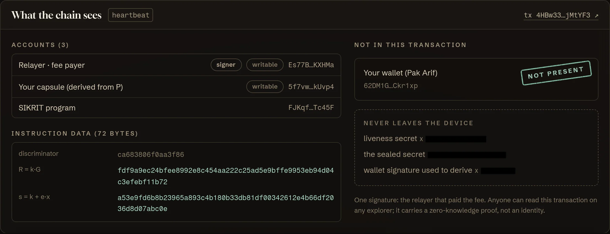
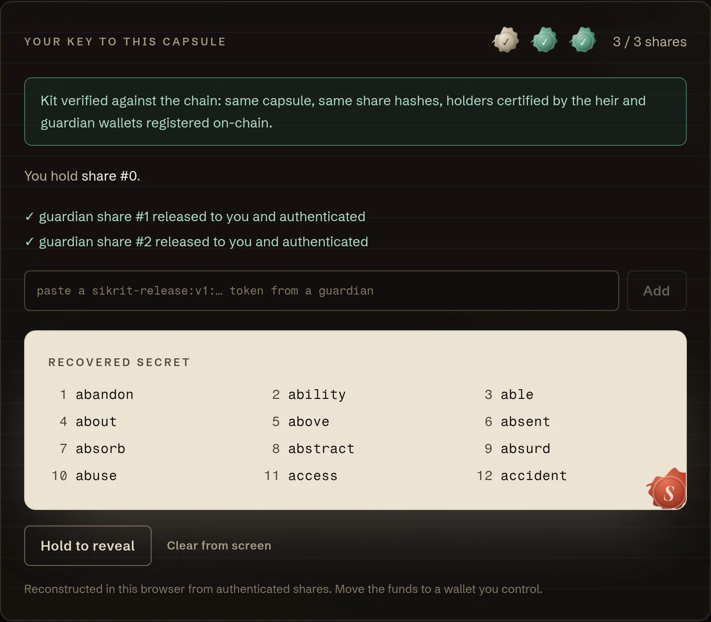
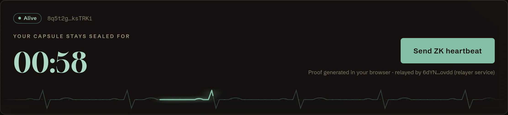
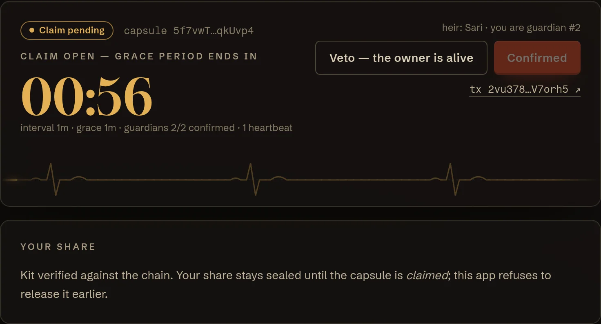

I
Seal
Your secret is encrypted in your browser under a one-time key. The key is split with Shamir: one share for your heir, one per guardian — each sealed (HPKE, RFC 9180) to a key its holder's wallet signed for.
on-chain: share hashes only
SIKRIT is a dead man's switch where proving you're alive doesn't reveal who you are. Your heir inherits your seed phrase only after you fall silent — and only with your guardians' consent.
estimated permanently lost — 11–18% of all bitcoin. Forgotten keys, lost devices, and holders who died without passing on access.
crypto investors in Indonesia alone (OJK, July 2026). Most of their families would not know where to begin.
Your family must be able to open your wallet when you're gone — and must never be able to while you're alive.
check_in() signer: 7xKp… owner wallet ← public vault: PDA("vault", 7xKp…) ← derived from it → "7xKp… is alive, active, today"
heartbeat(R, s) signer: relayer ← pays the fee capsule: PDA("capsule", P) ← P = x·G → "whoever knows x is alive"
We reviewed 11 inheritance protocols. In every one, the check-in points at the owner's wallet — including the one that already uses a zero-knowledge proof. A public feed of when a holder is active, and when they stop, is a map for attackers.
Your secret is encrypted in your browser under a one-time key. The key is split with Shamir: one share for your heir, one per guardian — each sealed (HPKE, RFC 9180) to a key its holder's wallet signed for.
A Schnorr zero-knowledge proof that you still hold a liveness key that is not your wallet. Verified on-chain, bound to a counter so it works exactly once, sent by any relayer.
Miss your interval and anyone may open a claim. A heartbeat cancels it; guardians can veto a false alarm. After the grace period and a guardian quorum, your heir claims — only then do guardians release their shares.

capsule transactions that contain the owner's wallet — re-read from the chain by our end-to-end test after a full inheritance.
to verify a heartbeat proof, via Solana's curve25519 syscalls.
for 30 years of weekly heartbeats (5,000 lamports each). No token.



// Fiat–Shamir, mirrored byte-for-byte TS ↔ Rust e = SHA-512("SIKRIT:liveness:v1" ‖ program ‖ capsule ‖ P ‖ R ‖ nonce) mod ℓ // on-chain, sol_curve25519 syscalls accept ⇔ s·G − e·P == R
The counter makes every proof single-use; domain, program and capsule bind it to one purpose. A pure-Rust verifier blew past 1.4M CU — the syscall path costs 41k.
| Project | Chain | Is the check-in linked to the owner? |
|---|---|---|
| DeathClock | Solana | Yes — its Groth16 heartbeat proof commits to the owner's key (~183k CU) |
| Dead Man's Vault | Solana | Yes — vault derived from the owner's wallet |
| Ethernal | EVM | Yes — every owner action is the proof of life (heirs are hidden, the owner is not) |
| Sarcophagus | Base + Arweave | Yes — owner re-wraps from their wallet; relies on the SARCO token |
| LastSats · Heirloom | Stacks | Yes — owner check-in transactions |
| Kaspa Safe | Kaspa | Yes — periodic on-chain check-in |
| Serenity Shield · Deadhand | Secret · server | Trusted party — a TEE network or a server sees every check-in |
| SIKRIT | Solana | No — a zero-knowledge proof from a non-wallet key, sent by a relayer |
An "Inheritance" tab inside Solana wallets, built on our dependency-light SDK. Retention for them, distribution for us.
$2–5 / month: heartbeat reminders, an alarm the moment a claim opens, relaying with an SLA. No lock-in — anyone can relay.
Notaries and estate planners as guardians — a natural fit for Indonesia's akta wasiat. They confirm; they can never open alone.
Optional, paid once — only when an inheritance actually happens. Heartbeats stay near-free forever.
Founder · 4th-year student, Cryptographic Software Engineering at Politeknik Siber dan Sandi Negara — Indonesia's state polytechnic for cyber security and cryptography.